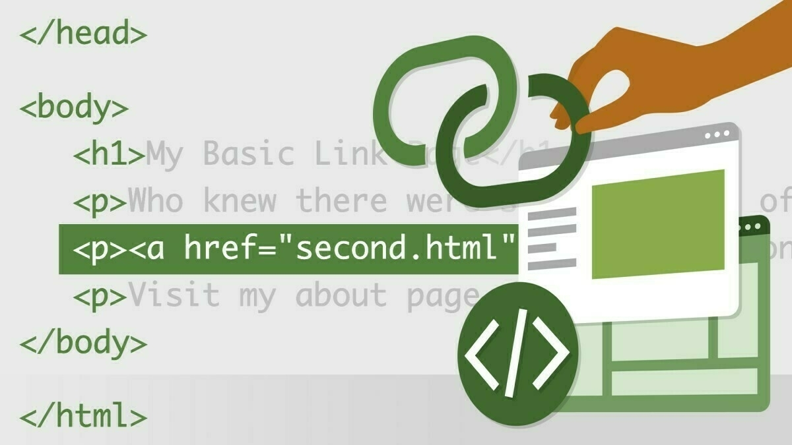
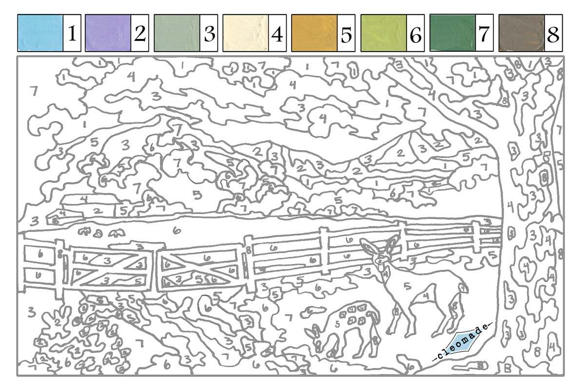
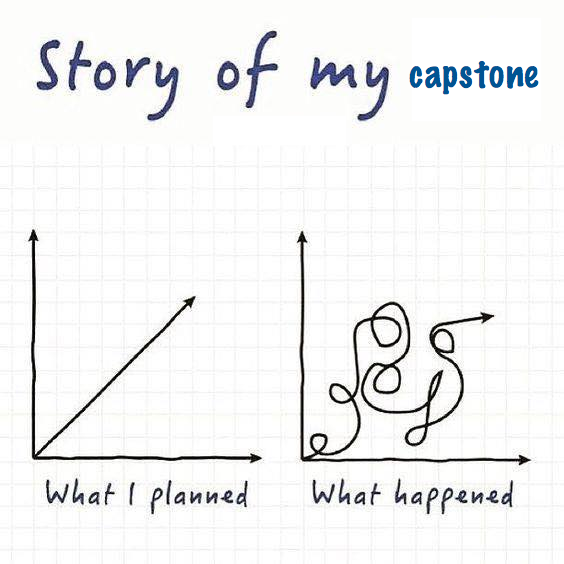
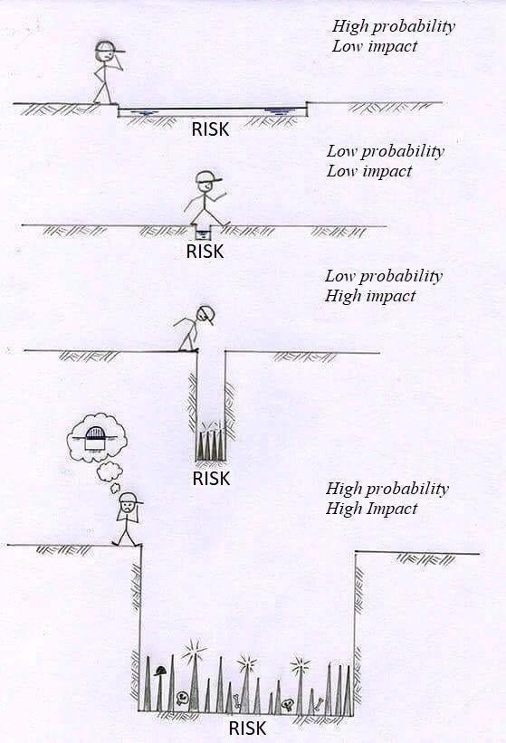
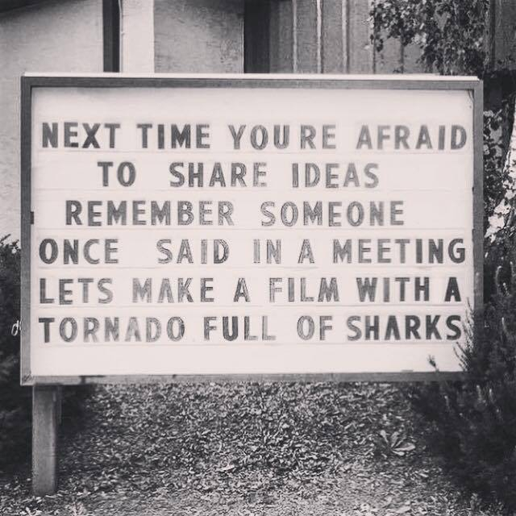
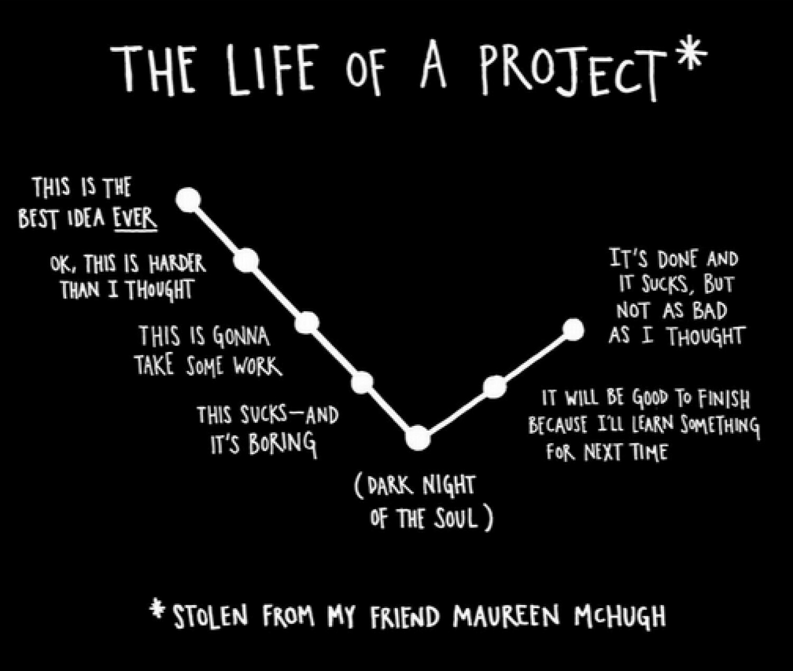
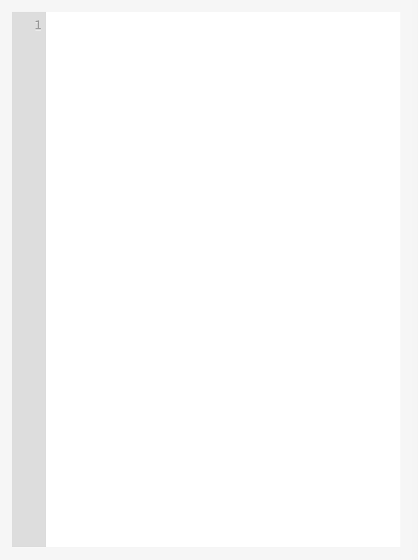
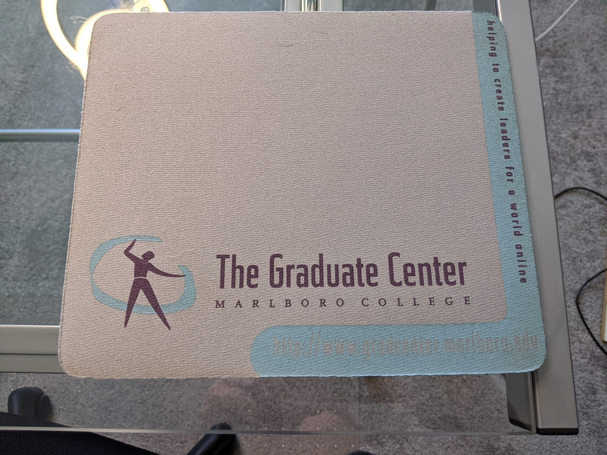
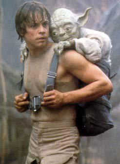
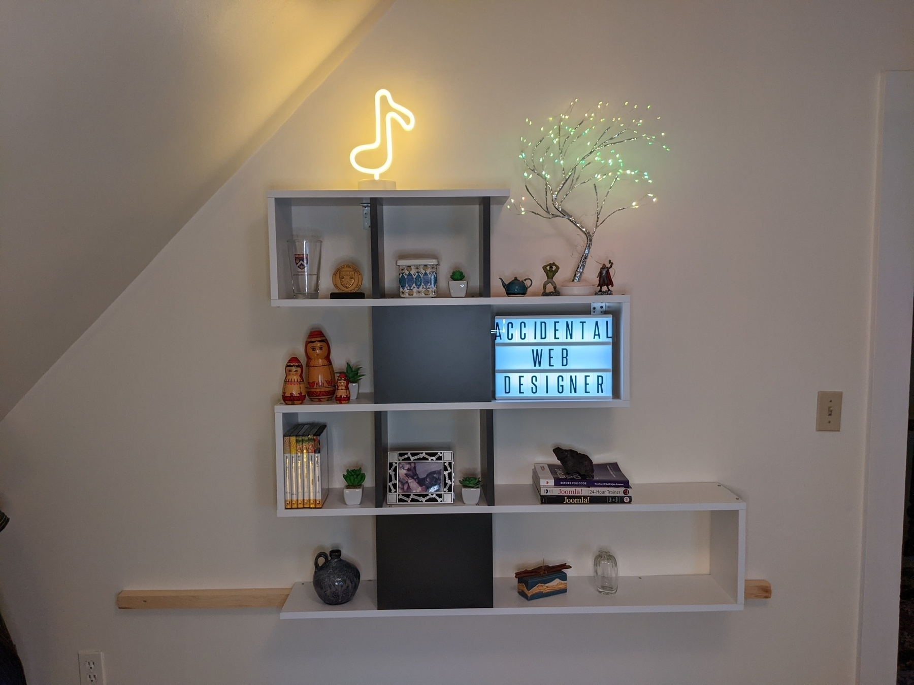

Hyperlinks are the foundation of the World Wide Web, but they come in many different flavors. Do you want to link to a specific point in a document? Make a phone call, or send an email? Link from images or dedicated navigation bars instead of text? In this course, instructor Jen Kramer gives you all the tools you need to make those tasks easy. Jen goes over basic links, linking to different files and resources, and linking from images, headers, text, and more. She shows you how you can style links and individual link states using CSS selectors, then goes into how you can make exceptions and create different styles. Jen covers the steps you should take to maintain links and redirect them when necessary.
When LinkedIn asked me to put together a course on links, I thought it was a ridiculous idea. How much could be said about links?
Then I started spelling out All The Things:
Linking to pages within your site and pages elsewhere on the internet, in new windows/tabs and the same window/tab.
Links to other things: PDFs and other documents, email addresses, phone numbers.
Links within the same document (back to top links, links to sections of the page).
Images as the item to click on to load a link, instead of text.
Image maps, in which one image contains more than one link.
The five states of a link for styling purposes: unvisited, visited, hover, active (once the link is clicked but before the page loads), and focus (when the link is selected but not yet clicked).
Navigation bars, horizontal and vertical.
Styling text links to look like buttons.
Checking for link rot.
Using a robots.txt file to control search engine movement in a site.
Redirects, both client-side (meta tag) and server-side (301, 302, etc).
Basically, there’s a whole universe of links, and this is the course that covers it all.
What was happening on March 6, 2020, one year ago today?
I was preparing for a 3-leg trip from Boston. First stop was Portland, Oregon, for the SIGCSE conference. After the conference, I was heading south to California for some LinkedIn Learning recording. After some time there, I was headed to Arizona to visit my parents at their retirement community.
I was anxious about this trip. Because I was scheduled to be gone from March 11-24, I was worried that the airlines might shut down along the way. Maybe some element of the trip would be cancelled, but others would continue.
On March 6 at 10 AM, I was getting what would become my last haircut for 2020.
By that afternoon, Harvard announced they would not allow non-essential academic travel in the US. (They’d stopped allowing international travel a few weeks prior.) In other words, my participation in SIGCSE was no longer happening.
By March 9, LinkedIn had cancelled my trip for the following week.
Cancelling the trip to see my parents was a no-brainer. I could not live with myself if I brought them the virus. As it turned out, their retirement community closed to visitors around March 16.
Of course, this was just the beginning. Many more trips would be cancelled along the way, including a birthday trip to Europe, conference trips, and video recording trips. It was a year without music, as all of my music groups cancelled rehearsals, concerts, and whole seasons of performance. It was a year without family. Indeed, I last saw my family in August 2019. It may be 2 years before I see them, possibly longer.
Remember paint-by-number as a kid? There was a black and white drawing of something, sprinkled with numbers. The numbers correspond to the paint colors. Match the paint color to the numbers in the drawing, and presto, instant masterpiece.

This is the mental model of many people creating websites, flyers for the bake sale, and other digital communications. Find the template you need, drop in your own information, and presto, instant masterpiece.
Only in both cases, it’s not really a masterpiece.
With paint-by-number, painters get the joy of doing the painting without doing the work of visualizing something and mastering painting technique to produce the thing.
With a Microsoft Word template, there may be a match to what the user wants to convey. An event flyer to hang in a coffee shop or library contains all of the same information: event title, time/date/location/cost, brief description of what happens and what will be experienced, contact information for questions, and an eye-catching graphic. Of course, the flyer looks similar to other fliers on the bulletin board, because everyone is using similar templates. But it may accomplish its goal.
With websites, templates provide a way for many to structure their content. They don’t quite know what to say, or how to say it, but they need a website. They pick a template, fill in the information to the best of their ability, and hope it works well enough to accomplish their goal(s).
Creating a method(s) to guide someone through the thinking process about a problem at hand is incredibly difficult. We get distracted by the “edge cases,” the 20% of cases when the process doesn’t work, rather than the 80% of cases where it does.
Refining the method to a fill-in-the-blank document, workbook, or template is another layer of abstraction where another 20% of cases are lost along the way.
Structured thinking about a problem is really difficult. If you can refine your methods for approaching a problem into a paint-by-number solution, people will pay lots of money for it, even if it’s not perfect.
In recent years, I’ve started creating “turn-in sheets” with my assignments in academic land.
My assignments spell out what I want students to do for a graded project.
The turn-in sheet structures their answers. It ensures that they’ve hit everything that I wanted them to address in their work.
Originally, I asked students to do this to streamline grading. When I ask for use of certain structures or functionalities when building a web page, I do not want to dig through each site to find the thing. I definitely don’t want to dig through tons of code to find relevant lines. The turn-in sheet asked the student to tell me where all of the things were that they needed to address in the assignment.
Later, I realized these turn-in sheets serve more functions than this.
Student anxiety is reduced, because they know they’ve addressed all aspects of the project by completing the turn-in sheet.
Students were more likely to reflect on their work, because it was clearer to them what they accomplished when it was formatted well.
It helped to cut down on cheating. This was completely unexpected! When students have to explain where to find an example of X programming structure, they must understand the code they steal. I still remember the student who stole a 12-column layout and claimed it was a 4-column layout. We caught it because the student didn’t understand the stolen code and pointed us to exactly where the plagiarism happened.
Turn-in sheets and course workbooks help to make intangible skills like programming feel more real. They organize thinking. And they may make your grading life easier, too. Try this for your next course.
I’ve created “courses” at LinkedIn Learning since 2008, when the company was called Lynda.com. Lynda.com was one of the earliest, if not the first, video training companies out there.
Their course format is a series of short videos. One video segment may lead into another, but fundamentally, each segment stands alone as a unit. After (theoretically) watching the videos, you receive a certificate of completion which you may attached to your LinkedIn profile.
Theoretically, because you can get this certificate simply by streaming the videos in the background, on mute.
Theoretically, because there’s no transference of skills happening to one’s own projects or situation, no reflection on the learning process, nor is there a meaningful evaluation of learning for either the learner or the instructor. LinkedIn Learning is aware of this issue and they continue to work on ways to solve it.
However, the genie is out of the bottle, so to speak. The LinkedIn Learning/Lynda.com “course” has become a misnomer that others try to emulate.
Photo by Karolina Grabowska from Pexels
In the explosion of online courses offered all over the internet, a “course” is now a series of videos hidden behind a login. Pay your money and get a handful of overproduced videos that cover your area of interest.
Then the creators wonder why students aren’t learning the material, or wondering why sales have dropped. Currently, creators turn to more bells and whistles in the videos, more animation, more attempts to make “edutainment” rather than solid education.
Even if your course is an asynchronous, instructor-absent course, where students move through it at their own pace, you need more than video to truly make a course.
Videos are awesome for demonstrating something. However, they’re terrible for transferring knowledge to a new environment. They’re not good for measuring what you’ve learned. Consider how often you watched someone do something and you think, “that doesn’t look so hard.” Then you try it, and you quickly discover that you have no idea what you’re doing.
Yes, have videos in your course. No, videos aren’t the whole course. You need more to round out the learning experience. Here’s some suggestions.
Add self-graded quizzes to evaluate student’s assimilation of the video. These don’t have to be standard-issue multiple choice. Consider matching games, categorization games, and formats that involve photos, not just words. This type of evaluation is best for terminology or other behaviorist “you just gotta know this” material.
In your video, demonstrate how to do the thing you’re teaching. Ideally, students are following along with you, doing the same thing.
Now provide your students with the assets they need to do the same type of thing on their own. You provide the structure to think about the problem, the goal they’re trying to achieve, and any boundaries and guidelines for where they should focus their attention. Follow this up with a video explaining how you solved the problem. Bonus: have a discussion thread where students may post photos or links to their work, along with a brief reflection – what went well? Where did they get stuck? What do they still not understand? What would they do differently next time?
Finally, invite the students to do the thing on their own. Provide a separate discussion thread where they can show off their work. Again, encourage reflection, not just “this is my thing.”
The middle step is the most important, because this is when transference happens. By giving them a small project with everything they need to succeed, this is where students gain confidence or realize they need more help in a certain area. They get a sense of what’s required to do the thing on their own.
Incidentally, the middle step is the piece that’s missing in almost every course out there. It’s definitely missing in every software course. And it’s super critical for understanding how to program.
When students learn something new, they’re not only learning the buttons to click, or the syntax, or the structure. They are also learning the organizational tools and thinking processes that go with the thing they’re learning.
This is one of the most overlooked aspects of teaching. Students of all abilities and intelligence have an issue with this. My Harvard students had as difficult a time knowing where to start a project as students did at any other university where I’ve taught.
Give people a structure for thinking about the problem at hand. If it’s a 5-step process, the workbook contains those 5 steps written out, along with whatever questions they should address and a space to write. Include reflection questions. Include suggestions for making the activity more challenging or less challenging.
Surprisingly, even in our digital age, people do not mind printing a workbook and writing all over it. In fact, many prefer this methodology, because they feel like they have a tangible asset after class is done.
Hopefully some or all of these tips help you raise your online video series to a full course.
If I had to describe my T-shaped skills, I’d say my depth is in HTML/CSS and user interface design. Across the top, you’d find planning websites and UX, teaching skills, instructional design skills, marketing, and general technology skills – the ability to look at new software, figure it out, and apply it to a problem.
As I move into the no-code world, I’m watching a new group of people relearn the issues we already learned and understand well in the professional website world, the marketing world, and in the world of UX.
Today I watched someone define a target audience as “non-developers.”
Cool. We’ve left out the 0.3% of the population who are coders. That leaves 99.7% of the world left as a target audience. This is too broad.
Defining and targeting an audience for products is something already well-known to the world of marketing and user experience. However, the no-code world doesn’t know this work exists and has no idea how to apply it to what they do.
We see this in the coding world. People complain about how tired they are about coding solutions to their problems, maintaining those solutions, and so forth.
However, if you mention “no-code” to the coding world, they have no idea what you mean. They may also dismiss this out of hand as too trivial for their attention.
For those who are looking at new emerging sectors, see if you can identify what that sector currently struggles with knowing and mastering.
The no-code space current worries with user experience, marketing concepts, and project management. “Agile methodology for no-code” is a no-brainer for this space. No-coders need to know project management, but everything is currently framed with coding in mind.
User experience is framed with code in mind too, even though UX is a no-code world! What happens if you plan a product and hand it off to no-coders to implement? Nothing. It’s the same process you’d use for coding. But when you’re not using the language your audience speaks, then it feels like your concepts are inaccessible and unintuitive.
Speaking to your target audience is everything. When knowledge is locked up in the jargon of a specific discipline, it’s not transferable to others.
How can you make your work accessible to adjacent disciplines? How can you codify what you know into a framework that applies to cousins of your areas of interest?
Honestly, the last thing we need are the 24-year olds who discovered no-code during the pandemic to teach people how to build no-code products. They don’t have the background to do it well.
I was speaking with an English professor the other day. She was discussing how online teaching has changed her approach to class.
Previously, she’d have individual conversations with students about improving their writing. Now she has those conversations publicly, with all students in attendance on Zoom. She was particularly concerned about constructive critique and not embarrassing students.
I said, “Sounds like a music master class. Only you’re doing it with writing.”
In a music master class, a form that has been part of classical music teaching for centuries, a well-known and well-respected audience teaches a lesson from the stage. There are a handful of performers, playing a piece they’ve worked on for some time. The artist works with the student for a period of time, often 15-20 minutes. Typically, the artist focuses on one aspect of the student’s playing; often it’s the artistry that gets attention rather than the mechanics of notes and rhythms.
The audience gets enormous benefit from this:
They learn how a master performer thinks about and approaches a given piece of music.
They see teaching techniques on display, including how the student responds and improves to suggestions.
The audience may take some of the lessons back to their own playing in a moment of transferance.
The audience also listens critically, comparing their own performance of the same piece to the student’s and the artist’s work. Is there anything the audience member might take to improve their own work?
The audience also gets moments of critical thinking – do they agree with the artist’s analysis of the student? Many critiques are art, so there is no “correct” answer.
In an academic environment, the English department would rarely (never?) overlap with the music department. Indeed, academics who attempt to be “cross-discipline” often are penalized in promotions and tenure decisions. However, her husband is a musician, and she understood the parallel to the master class having attended a few with him.
Imagine how English class might change if they took more teaching tips from the music department.
Below is a recent thread about what makes a good online course. Click through to read the whole thing.
In the last 2 years, I’ve gone through 8 online courses but completed only two: WoP by @David_perell and BASB by @fortelabs. What makes them different and what can other course creators learn? Here are 11 components for creating a next-level online learning experience:
— Julia Saxena 🚀🚢 (@julia_saxena) August 8, 2020
Main points the author hits include:
Measurement of progress
Collaborative learning and feedback
Proper use of technology (like breakout rooms)
But her first item was this:
1. Onboarding: Before the course starts, let students reflect on their intention and goals. Measure their current state to show them where they are now. Then measure again at the end to show progress.
— Julia Saxena 🚀🚢 (@julia_saxena) August 8, 2020
This is the definition of humanistic learning theory. The learner should have their own goals and grades are irrelevant. Measuring their own learning is important.
This can be implemented by giving the same quiz at the beginning and end of the course, so students can measure learning in a firm way. Or it can be mushier – asking students to reflect on what they’ve learned is one way of doing this.
From the recent interview with Lynda Weinman, founder of Lynda.com:
To be a good artist, you must be critical. You don't have to save it all.
Here she was referring to her new 3D printed pottery work. However, she did go on to say this advice can apply to careers and career focus.
As she explained, sometimes you make a mistake, or you make something that’s not terribly awesome. Learn from what happened and let it go. Move on.
Many people let mistakes keep them from moving forward in their field. They obsess over the thing they did wrong, rather than figuring out the lessons in what to avoid or improve next time.
You don’t have to save it all. It’s ok to throw it out and move on.
Recently, I attended an excellent interview with Lynda Weinman, founder of Lynda.com. She sold Lynda.com to LinkedIn in 2015 for $1.5 billion.
Today, Lynda is creating 3D printed pottery. It combines tactile art with plenty of programming.
There were two reflection points she made that I thought were outstanding and transferable. This post involves reflecting on mistakes.
One of the great qualities of a teacher is an ability to reflect on mistakes made. The process sounds so simple, but it’s very difficult to do in practice. Lynda is a master at this and includes a section on mistakes in her blog.
Identify the mistake made in a very specific way. Detail exactly what lead to the undesired outcome.
Identify exactly what you’ll do to avoid this mistake in the future. Sometimes this is built into the above statement.
Optional: detail what you can do to make a more positive outcome when this type of mistake occurs.
An example that follows this formula from this recent blog post:
Mistake #4: Do not trim the base when the clay is too wet. Wait a day or two for it to become a lot more stiff, but not leather hard. Lesson learned: When the vase falls over and becomes lopsided, squish it so it looks like that was your intent.
My students have always loved moments when it looks like I’m struggling, when I make a mistake in coding, or make other mistakes in class. It’s always an excellent teachable moment. Learning how to identify those mistakes and fix them is really important, but it’s rarely something covered in the curriculum. Instructors think they look “stupid” for making mistakes when teaching. This isn’t true. It’s encouraging to students to know that the teacher doesn’t have superpowers. Everyone struggles sometimes. The difference is the teacher struggles less than the student.
In all the web design meetings I've been in over the years, I don't think I've ever heard anyone say: "How do we design this to last." It's just assumed they'll be a redesign every 2-3 years. Why? Why is that assumed?
— Gerry McGovern (@gerrymcgovern) February 15, 2021
My response:
Because techies still drive the desire to redesign the website. We believe that if you don't know the Hottest Framework Of The Moment, our careers are doomed. Marketing/content doesn't know better with the tech. Everyone is exhausted with the constant churn. https://t.co/iGO4szTP4d
— Jen Kramer (@jen4web) February 15, 2021
If we look at the technical timeline, this goes back to the start of the web. In the 1990s, HTML and browsers changed rapidly enough that we needed to redesign websites to keep up with what was new. People had no idea how to design for this medium. Netscape and Internet Explorer were completely different. Table-based layouts were new. Fonts other than Times were new. We had 216 web-safe colors and a 640x480 boat anchor-style monitor to do it all.
In the 2000s, it was a matter of integrating CSS, ripping out tables, and getting people running on content management systems. We started to integrate multimedia and social media. Internet connections got faster, so we used more images.
From 2010-2015, it was making sites responsive.
From 2015 on, it became all about the JavaScript, shortly by all about the web apps.
And now, everyone in Geekland is exhausted by how fast everything changes.
Once the tech department has turned over in 2-3 years, all institutional knowledge has been lost about the site and how it was put together. The current developers trash the current site and how horrible it is. It’s time to redo the site in another technology that the current devs know. Then they depart, new devs are hired, and the cycle begins again.
Imagine a 10-year lifetime for a website. We might change the look of the frontend a little during that time, but we won’t change the fundamental working of the system.
That means our most recent redesign would have been February 2011. Content management systems and jQuery were the thing. Node.js was 18 months old. GitHub was a few years old. Angular was just barely released. Bootstrap wasn’t yet released.
Those websites were perfectly effective, but not as slick as the stateless websites we have today. A website from 2011 would look quite dated in 2021, not just in graphic design, but in technological design.
A 5-year timeline is more realistic with the fast pace of technology. However, if employees continue to turn over in less than 5 year intervals, do we attract the best people to work in the tech department if they’re working on 4-year old technology? Do we define the “best” people as those who are up with the most cutting edge techniques, or those who know the current tech on the current website?
There’s a lot of cultural issues here that we must first resolve. Perhaps the industry is still too young to realize we’re burning ourselves out.
One of the great outcomes of studying instructional design from a theoretical perspective is the ability to spot patterns in teaching.
When teaching software and coding, one typically encounters two theories in use.
Behaviorism : Just teach people the behavior and reward them for doing it correctly. Based on B.F. Skinner and others.
Best use is for the fundamentals of the subject. In math, it’s basic arithmetic. In languages, it’s alphabet, spelling, and grammar. In music, it’s notes, rhythms, and scales. If the teacher says “you just have to memorize this,” that’s behaviorism.
If you’re evaluating performance, it’s often done through multiple choice, true/false, and other means of regurgitating facts. Students are rewarded for memorizing, not applying.
If you were making a recipe, you would be rewarded for following all of the instructions correctly, rather than how good the recipe tastes. Behaviorism does not work in all kinds of learning.
Constructivism : “Learn by doing.” Base your learning on previous experience in the world, and apply that previous learning to the problem at hand.
If you’re following a recipe, you’re the person who changes the ingredients the first time you try it. You know what you like and what works from previous cooking experiences. You know you don’t like mushrooms, and you’ll leave them out of this recipe. You substitute butter for margarine, chicken broth for beef broth, and add meat to vegetarian dishes.
Best use is “doing” subjects once the fundamentals are mastered. Once a music student has learned a piece of music by a Baroque-era composer, how would the student apply those techniques and styles to the next Baroque-era piece she learns?
Evaluation happens through some kind of final product, not through the work along the way. Typically this is a project-based evaluation: a final research paper, a piece of working software, a film, a performance.
Constructivism shouldn’t be applied where there are absolutely right and wrong answers. It’s more about the shades of grey than the extremes of the spectrum.
In the software and coding world, behaviorism drives most instruction one encounters. It’s the “help files” associated with the software: go here, click this, type that, and you’re done. In code, it’s dominated by StackOverflow and developer blogs: here’s a chunk of code that does this thing.
Often, a coding class will start with examination of that chunk of code and some of its nuances. In that moment, students would tell you that they understood that code and its use.
The next thing students are instructed to do is constructivist. “OK, now apply this to your own project.” No further guidance is given in that moment.
This critical moment is the time when students decide they are not “good” at programming or technology. Instead, these students are a victim of poor teaching.
The instruction isn’t necessarily bad. The instructor explained that code in minute detail. The idea of applying that code to your own project isn’t bad either. Unfortunately, there’s a step missing in between.
That step is transference. This is the moment you take a concept you learned in one context and apply it to the next problem. It’s really, really hard to do.
Most people experienced this in grade school in math class. You memorized basic arithmetic all day long. You knew those times tables! But then… there were word problems. Word problems required you to read a few sentences, identify the problem that needed to be solved, identify the math to solve it, and calculate the answer. Most students did fine with basic arithmetic and failed miserably with word problems.
Professional software engineers are very good at transference. Instructors are really good at it too. However, the majority of students need help in making the leap from one context to the other.
There are techniques that assist with transference. Starting with a detailed explanation and ending with “try it yourself” are not fundamentally bad ideas. However, there’s much more in-between that needs to happen for an effective outcome for most learners.
By transforming the way that knowledge is discovered and shared, software has the ability to revolutionize the way scholars communicate their ideas. This article explains how software applications enable the highest forms of scholarship and applies those lessons to law.
Interactive software applications can enhance research agendas in the humanities and social sciences by making traditional, prose scholarship more thorough, persuasive, and analytically precise. Due to recent innovations, developing software for scholarly purposes is accessible to those that work in the humanities. Platforms for developing software have grown so sophisticated that they no longer require creators to write code to develop powerful, data rich, and well-designed interactive applications.
Houman B. Shadab
Dr. Shadab, a law professor, is using Bubble.io to create his applications for scholarly research and communicating results. This is very far ahead of academia, and it’s a pleasure to see this happening.
A capstone project should be balanced like the quintessential American meal: meaty main course, starchy side dish, vegetable side dish, and dessert.
A good capstone project is constructed in a similar way. Let’s take the case of a website as a capstone project:
Meaty main course: The main focus of the capstone. It’s the website, the vehicle where all of the component parts are assembled. Usually students are focused on website coding and construction in this phase. In the case of a website, there’s many areas of focus here. Students may be working with a CMS plus custom theming, coding and integrating a CMS plugin, creating a single page web application, or building a browser extension.
Starchy side dish: This is where the student might have a complimentary secondary interest. In the case of a website, this might be a user experience (UX) focus; website planning, card sorts, flow charts, wireframing, and user testing are some of my favorites to discuss with students. If the student has a programming focus, this might include website performance improvements, server configuration issues, database design, and so forth.
Vegetable side dish: This is the deliverable area that feels like real work to the student, but it’s an area where they should grow. For programmers, it might be graphic or interface design. For graphic designers, it might be light programming. Writing quality content and storytelling is always a good addition for any type of web design student. Some of these deliverables may feel like a bit of a stretch to the student. A little stretch means growth. (Too much stretch leads to breakage, though, so watch for this as well.)
Dessert: There should always be a fun component to capstone, to keep students engaged, interested, and enjoying the process. These deliverables may be weighted minimally. They may also be outside of the main focus of the capstone. In the web design project, this might be some photography for the site, a social media promotion plan, or a short (1 minute) video clip or animation. Programmers sometimes want to try a new library or framework that they’ve wanted to explore but have never had the time.
Combined with students choosing a good project , this balance of deliverables should keep students engaged through the term.
Capstone projects are all unique. Harvard’s digital media capstone projects are all over the map: films, courses, websites, UX projects, and combinations of these.
It is impossible to structure grading for a capstone project for this reason. However, structured grading is most vital for this course among all others.
In every other university course, grading happens during the term in some way through periodic assignments. Even in courses with a heavy assignment at end of the course, students still have some concept of how they’re doing as they complete their final work.
However, a capstone should be evaluated as a complete work, rather than evaluated piecemeal through the term. While students should get feedback along the way, they shouldn’t receive a hard grade until the end. They should have the opportunity to refine all deliverables and aspects of the project in light of whatever they’re currently creating. The point of capstone is to bring together multiple aspects of the degree program and synthesize learning over the curriculum. Grading, therefore, needs to be at the end and encompass the full project.
This clearly leads to potential issues. What happens when the student thinks they’ve done A work, but the instructor thinks it’s a C-? What happens when the student’s project isn’t “weighty” enough for a capstone? These potential surprises (risks!) must be mitigated in some way.
As I’ve mentioned in a previous post, students don’t understand mitigating risk going into capstone, nor do they understand how to scope a project. We also have an issue of how to grade a unique project.
Fortunately, a student-written grading rubric solves all of these issues.
I review their rubric and make sure the bar isn’t set low or that they’re working on trivial things. But have faith in these adult students. They chose to go to grad school with a reason in mind. Most want to do well on their project, but they also want to learn something new and be proud of their work. With guidance, they write a challenging rubric that stretches them, but not too far so it’s still achievable within the semester timeline.
Let’s go through all of the learning that happens when students write their own grading rubrics.

It’s one thing to say “I’m creating a 15-minute documentary on X topic.” It’s another to spell out exactly what it takes to create that: storyboarding, running the interviews, choosing the B-roll and music, editing it together.
Larger deliverables may be broken down further. For example, an interview segment might be graded according to lighting, camera angle and focus, sound quality, color correction, how it furthers the story, and consistency of these characteristics across interview segments.
Most students also put together a timeline for their work along with this list. I encourage them to create milestones, so they can quickly measure if they’re on track, behind, or ahead of schedule.
When students write down all of the elements and stages they must complete to create their project, and particularly once they schedule these over the semester, they start to get a sense of scope. They realize whether they’ve committed to too much work and need to scale it.
Once students have completed their list of deliverables, the next question is how to grade each deliverable.
There are two parts to this question. First, how do we evaluate each deliverable? Second, not all deliverables are created equal, so where should we place grading emphasis, and what should be minimized?
My students and I have conversations about how to communicate grading so that we’re both on the same page. How do you define good quality in a rubric so it’s clear enough to hang your grade on it?
Still, my favorite rubric item shows up over and over, year after year: “The website will be simple and easy to use.”
A noble goal! But how do we measure that? What is simple and easy for you may not be for me. This is usually where I ask the student if they will do user testing to ensure the site is simple and easy to use. And if the testers show that it’s not, what will they do then? (Usually this is sufficent to convince them to refine this criterion in some way to reflect the intent, but in a more measurable way.)
Students struggle with quality metrics in rubrics, but in the end, it’s a good exercise. It’s part of learning clear communication. It’s also useful for the end of the course, when they’re running out of time and they’re paralyzed by whether something is “good enough.” Since they made the decision of how to measure their work up front, allocating their time is an easier decision.
Some deliverables are more important than others. Some should be completed at a different level than others.
If a student is creating a documentary as their main focus, and they want to also complete a website for that documentary, I think that’s great. But the website is a minor deliverable. It might be built with Squarespace or other no-code technology.
If a student is creating a website as their main focus, however, it’s not going to be built in Squarespace, and it will involve some level of coding.
Within a deliverable, elements may be weighted differently as well. With websites, for example, some students want to emphasize graphic design, or page performance, or writing some type of code, or usability. All of these are important to the site, but not all need to be emphasized in the capstone project with a limited timeline. An ugly website with innovative coding may be as legitimate a project as a website with breathtaking graphics and photos and less coding.
Students should have some say in what they consider important (and presumably where they want to spend their time), vs. what they consider less important. I ask students to reflect on their learning goals for this project, in addition to the amount of time required for each deliverable. Those that take more time might be worth more points. There may be some “stretch deliverables” that the student isn’t confident they can reach, but they don’t want to jeopardize their grade or graduation. These might be weighted less to help mitigate risk.
Likewise, when students identify trivial deliverables (“navigation will work on all pages of the website”), I gently point out if they have not mastered navigation bars prior to enrolling in capstone, they are not qualified to build a website as a capstone project.
In the last 4 weeks of the semester, as the students are in their final grind to complete their projects, inevitably some level of panic sets in. Some deliverables took longer than expected. Work was demanding. Home life is demanding, particularly in pandemic times. Life happened along the way.
I remember when one student discovered a new technique for coding his project in these final weeks. He asked if he needed to refactor his project to use the technique. I asked what was on his rubric. Since neither the technique nor refactoring was listed as a deliverable, he understood he should keep going with what he had. Refactoring could be done after capstone.
Other students are short on time but long on deliverables towards the end. I advise working on deliverables with heavier weighting. They can also decide what’s faster and easier to complete and concentrate efforts there.
“Here’s my film!” Great! Now what?
I have students use their rubric as an organization tool for their deliverables. Where should I look for proof of excellence in each criterion?
Not all deliverables are contained within the main project (film, website, course). For example, a storyboard is critical to the film, but it’s a separate deliverable from the film. Many website and course deliverables also follow this pattern.
Rather than being forced to hunt for All The Things, students choose where I look. Time stamps, website addresses, lines of code, Word documents, and more form the basis of deliverables.
Finally, students fill out their own grading rubric as part of the reflection process. (I also ask them to write a final blog post reflecting on what went well and what they’d do differently next time.)
When students grade themselves, they are required to compare their work with the measurements they set. Did they achieve these metrics? Why or why not?
In most instances, students gave themselves lower marks than I did, sometimes dramatically so. The rest of the time, I agreed with their assessment. I can only think of one instance where my grade was lower than the student’s.
Many students start this grading and reflection exercise with an eye roll, believing it’s the final busy-work hurdle to graduation. But I don’t give busy work. By the time they’re done, they usually comment on how useful the reflection process was.
Whew, that’s a lot for one grading rubric. If you wind up with capstone students, I strongly recommend trying it with your next cohort.
Master’s degree programs generally have one of two endings. Either students write a thesis, or they complete a capstone project. Where students want to further job prospects in technology, rather than an academic or research-based career, a capstone is a much better choice. Students get to complete a large, meaty project that brings together many aspects of the degree program.
Capstone is also a good time to teach how to choose a great project.
The timeline for capstone is usually 7-9 months and is generally completed in three phases.
In Phase 1, students are asked to identify a project they’d like to work on. This is typically an informal exploration, plus discussions with capstone instructors and advisors.
In Phase 2, they write a capstone proposal. This is often a semester-long process, and it may be combined with Phase 1.
In Phase 3, they implement their capstone proposal, usually over a semester.
Each of these should be a post, so here I’ll start with Phase 1, identifying a project.
When I did my own capstone project in grad school, I already had a vision of what I wanted to accomplish. I was in grad school to train to become a web designer. (It was 2000. Different times.) I wanted a project that paid me to do the work. I wanted a well-known name brand to work with, ideally, rather than a small local business. I wanted to build the website from nothing – I wanted the experience of gathering requirements and goals, creating site maps from a card sort, doing the graphic design, and coding the whole thing inside of Dreamweaver (as one did in those days). I wound up doing a website for Massachusetts 4-H, which was housed at UMass Extension. This project lead to many others through UMass over the years.
Naturally, I thought other students would have the same experience. Not true!
I found that students were unable to think about the capstone project beyond “what can I do to get an A, graduate, and move on.” I started asking the students these following questions to help structure their thinking.
Why did you go to grad school in the first place?
What kind of job do you want when you graduate?
What is missing between that job you want and what you’ve learned here? What did you want to learn more about? What skills do you want to demonstrate?
Is there life for this project beyond capstone? It’s a lot of work, so if we can use capstone to launch a business, get a job, or some other way launch your future life, this is worth exploring.
What would hold your interest for 7-9 months of intense work?
Through the years, I’ve realized this type of structured thinking is missing in many aspects of student work. It’s lead me to incorporate more structure in assignments to better guide students to what I’m looking for in projects. Thus my famous “turn-in sheet” was born. And that is another topic for another post.

After 20 years of teaching in academia, I’ve coached many capstone projects.
Part of the capstone process is examining risk and mitigating it. Students have very little ability to do this, even after completing courses and assignments for a full degree program. This is because in a regular course, the instructor assigns all materials to consume and study and provides assignment(s) that have deadlines. Students manage time and scope based on work that’s already defined these parameters for them.
That means that when a student is creating a project of their own, they do not understand how to properly scope their work within the time parameters.
They also don’t understand risk. In a standard university course, risk during the semester usually looks like this for adult students with jobs and lives:
High probability, low impact: Work or kids get demanding during a portion of the course. Work ahead, talk to the instructor, and usually you get through this without significant damage to the grade.
Low probability, low impact: Not completing a weekly requirement: not attending class, not completing a weekly quiz, not posting a discussion post. This could be simply forgetting something, or it could be a conflict with other parts of life meant that the work just didn’t get done.
Low probability, high impact: Death in the family, severe illness of the student or in the student’s family, childbirth during the term. Universities have methods of working around these issues via course incompletes. Students should always talk to instructors to get help when these issues happen.
High probability, high impact: There are certain students who are consistently bad at managing time and always seem to have some drama going on. If you talk to other instructors who had this student previously, you’ll discover the pattern across all courses. However, these students are rare in adult learning programs.
In other words, while students are always concerned about getting a lower grade than they think is reasonable for their work, talking to the instructor consistently and being engaged in the course is generally enough to get through it.
For a capstone project, they are concerned about failing the project and jeopardizing graduation. Low probability, high impact. However, when the student controls most of the project, as is true for most parameters of capstone, the probability is higher here than it is for other courses. Students don’t understand how to scope their work – a topic for another post – and can easily sign up for too much to complete within the allotted time. This is the biggest reason that capstones would not be completed.
How to mitigate this risk? Focus on what’s needed for the project to get to graduation.
Consider the metaphor of visiting an all-you-can-eat buffet the first time. It’s amazing! There’s so much food! You can eat whatever you want and they bring more! But pretty soon you’ve tried a few things, and you’re getting full. You didn’t get to dessert yet because you ate too many dinner rolls.
Students in a healthy relationship with their capstone project have similar issues. They want to do ALL THE THINGS and make an amazing project. They identify more things along the way that they want to do. All the while, the clock is counting down. While the student may believe all of the things are required to make a good project for a portfolio, it’s unlikely that they’re all required to complete capstone satisfactorily and graduate.
(Students in an unhealthy relationship with their capstone project do the absolute minimum. It’s rare, but it does happen occasionally. Usually this is affected by outside forces – illness, death, other life issues. The student may also have chosen a poor project that isn’t engaging for them. That’s for another post.)
As an instructor, you must teach them about the low probability, high impact problem of not doing the right things for graduation. Graduation is always goal #1. Everything else is Phase 2.
One of the ways I’ve kept students on track to completing their capstones is through a grading rubric. This is also suited to another post, but briefly, a rubric identifies what they will do, how important that work is, and how it should be graded. It’s a contract of sorts.
Future posts:
The power of the student-written grading rubric in capstone
Scoping capstone projects and keeping students in scope
Helping students choose engaging capstone projects
Mistakes happen. I’ve certainly made my share.
However, instructors FREAK OUT when they make mistakes when teaching. They mistype something, misconfigure some setting, make syntax errors, and so forth.
Then they edit the video, completely concerned that they look stupid.
Through the years, my students taught me that my mistakes were a powerful moment for them.
First: OMG the instructor makes that SAME MISTAKE that I do all the time! Wow!!! (There’s power in seeing yourself in a role model.)
Second: When I make a mistake, I don’t FREAK OUT. I look at the problem and try to figure it out. I ask the class what I did wrong. I model how to debug an error. This is important. Students are going to make errors too. Do they know how to debug?
Finally: Even when I’m on video and I make a mistake, I don’t edit out the problem in my own videos. (For commercial video, this is another matter, of course.) Again, students should know that errors happen to everyone and tracking down the problem is part of programming.
Indeed, that’s the biggest takeaway: Everyone makes mistakes, so why can’t you? It’s part of programming and learning.

Next time you’re afraid to share your ideas, remember someone once said in a meeting, “Let’s make a film with a tornado full of sharks.”
Students are always afraid to think creatively about their work. In academia, they’re worried about their grade, which drives much of this fear.
However, taking risks is where student learning is greatest. Trying something and having it fail is one of the greatest experiences for a student, when handled correctly.
This is why reflection is so important for students.
At first, it feels like busy work. Why do I need to reflect on the work I did? I know what went right or wrong. I know what to do next time.
However, when they must organize those thoughts into a coherent paper, video, or presentation, they learn much more about what happened.
It’s not just the project failed. Now it failed because I did X, so Y happened, and Z was the outcome. Next time, I’ll do A because B. I expect that to help because C.
Look at all of the “because” in that paragraph. Because is the hard part. It’s easy to say something didn’t work. It’s really hard to articulate why and how to avoid that outcome in the future.
I’ve taught for 20 years in academia.
I’ve been a teaching assistant, an adjunct instructor, a lecturer with benefits, and a program director.
I’ve taught courses with syllabi developed by others. I’ve developed my own syllabi for courses with objectives and nothing else. I’ve identified and created my own courses from nothing to fit inside of a degree program. I’ve created the entire degree program.
I’ve mentored maybe 200 students over the course of this time through some type of capstone or thesis project. These are the big projects that students create at the end of their degree program that synthesize everything they’ve learned into a portfolio-worthy project. Most of my mentees were graduate students.
Some of those students had a clear vision of what they wanted in life. Others went to grad school to “learn more about computers.”
When it came time for capstone, everything changed. The style of teaching, the expectations of students and instructors, the work, the overwhelm, the self-doubt, and the joy of completion were always part of the journey.
Over the next several posts, I will identify a few common themes that ran through nearly every capston project I advised. We’ll start here, with one of my favorite capstone cartoons. Every student experienced this somewhere along the way.

It’s in Squarespace, Wix, Microblog, WordPress, Drupal, Joomla, Softr, Gumroad, Teachable, Thinkific, and countless others.
It’s usually located under Design, Theme, or Advanced.
It looks like this: 
It’s The Box.
Into this box, one pastes CSS.
This implies that the website owner:
knows enough CSS to know what to do with this box
can form a CSS selector that “works” (i.e. specific enough to the problem but not overly specific)
knows enough CSS properties to spell out the styling that they want
understand the cascade enough to know how to make their style work when it doesn’t
Wow. So why is there so much code in no-code site builders?
True, you don’t have to use the box. But if you use no-code tools long enough, you’ll eventually find something that you’d like to tweak just a little bit relative to what you’re able to customize with the tools.
Where does one go to learn this CSS? The professional courses are all focused on layers of command-line tools, over-powered code editors, and Git repositories. None of these things help with The Box.
Furthermore, the browser’s devtools are pretty inpenetrable to those who don’t know HTML and CSS already.
In the short term, we must teach CSS to navigate The Box. (And let’s face it, many of today’s “full stack” coders aren’t able to navigate it, either.)
In the long term, we need to improve our interfaces in some way so The Box isn’t needed.
This is a big problem to solve that no one is talking about.
I keep waiting for the day when higher ed discovers The Long Tail.
Twenty years ago, if you wanted a master’s degree, you went to whatever university was nearby. You paid in-state tuition, if applicable. You kept your job and went to school in person at night.
Today, if you want a master’s degree, you have many more choices for degrees. Many offer a 100% online option, or “zero residency.” Some have low residency – part of a class in person, or a whole class in person in a compressed timeline. The idea is that you do your residency while taking a vacation from your job, if needed. But pretty much you can go to any school you want, on any timeline you want (full time or part time) and get the degree you want.
What is the difference between a MSCS at UMass, UVA, UMN, or UCLA? Why would I pick one school over the other?
You can say it’s all about the faculty, the location, the school’s reputation, the specific courses. These elements certainly drive many choices.
But truthfully, it comes down to price. It’s a MSCS. Everyone offers one of these. They aren’t all that different. To attract students, you have to drop your price. This leads to a spiral to the bottom.
Instead, universities could be offering The Ultimate Degree In This Obscure Subject. Who offers the ultimate Digital Storytelling degree? The Web Development degree?
The usual objection has to do with faculty. But since we’re teaching under a majority-adjunct faculty model already, is this really an objection?
Donald Miller of Storybrand: How to Strategically Lay Out an Effective Home Page
Great advice on how to lay out a home page, but so many people get hung up on the design details.
In about 30 minutes, I built out a template based on his description in his article: https://storybrand.softr.io/
And it’s a breeze to jump in and make changes with Softr, even if you don’t know the software.
This is an example of transferrance, one of the largest challenges in teaching technology. Miller wrote an amazing article with text descriptions of what the website should include. Softr has a great tool that reflects all of those descriptions. But putting these two things together is a bit more difficult for many people. By providing an example like this, the concepts become more tangible to learners.
I agree with everything in this article on a technical level.
Tailwind also encourages the notion that HTML and CSS are fundamentally broken.
That toxic mix of gatekeeping and egotism is what I dislike the most.
Folk music seems to rotate in recent history.
It was a big thing in the 60s, of course. The singer/songwriter with acoustic guitar singing protest songs was everywhere – Bob Dylan, Joan Baez, Jonie Mitchell, Pete Seegar, Simon and Garfunkel, Peter Paul and Mary.
It made a comeback in the 90s in the form of the Indigo Girls, Tracy Chapman, Suzanne Vega, Alison Krauss, Emmylou Harris, Michelle Shocked, and Christine Lavin. Notice these are all women - there weren’t many men doing this.
We got a little bit in the 2010s with Nickel Creek, Chris Thile, and Heather Nova.
Why not sea shanties as a foundation going into the 2020s?
My friend and colleague Mary Malloy was on NPR talking about sea shanties. She knows way, way more than I do about this part of history. Go listen. She’s terrific.
As a longtime musician, I’ve been fascinated watching sea shanties take over the internet this past week.
Playing or singing music with others is always a great joy. It is one of the hardest parts of this pandemic, missing my fellow musicians for weekly practice.
This music taking over TikTok at this moment in time has several interesting threads.
a. Sea shanties aren’t difficult to sing. They have pleasant, simple melodies. They’re easily harmonized.
b. Thre are fantastic stories behind the songs. Some compare isolation on board ships with isolation in pandemic times. These stories are also very different than the usual run-of-the-mill pop song lyrics (seriously, how much can we sing about love and loss anyway?).
c. No music training or instruments are required to participate. (Although in the latest versions, we have instruments added, including a beat track!)
d. And this is critical – TikTok made it happen, because they allow EASY layering of your video on top of others. No Garage Band, no special software, just a free app with amazing usability.
Now someone with no music training and few technical skills can join in the fun, creating something bigger than themselves with people they don’t know in a time of isolation. What could possibly be more appropriate to this moment in history?
Why not bring back spacer GIFs?
Josh advocates for a new separation of concerns, based on compartmentalized technologies (buttons, lists, etc) as opposed to HTML, CSS, JavaScript.
Amusingly, the problem he describes would be fixed with some simple CSS, an understanding of the cascade and inheritance, and an hour or so figuring out how margins really work.
Just like Josh doesn’t understand CSS, not everyone understands JavaScript. It takes a lot of learning to get good at JavaScript. And shockingly, the same is true for CSS.
If you want to have CSS experts who can fix your problems, you can’t put the CSS in your JavaScript.
That’s why there’s separation of concerns, old-school style: HTML, CSS, JavaScript.
That’s why Josh’s proposed separation of concerns, based on components (button, list, media) flat out doesn’t work. This separation of concerns relies on a front-end expert who can keep up with three different and rapidly evolving technologies. It doesn’t allow for expertise in any one area.
Thus, you wind up with a JavaScript expert who doesn’t understand CSS and wonders why no one else (in his sphere) does either.
I am amused that the ultimate solution to Josh’s problem is to go with the old-school separation of concerns and talking to a CSS expert, rather than attempting to bend the web to his will using JavaScript alone.
Two approaches to teaching tech:
a. Teach the button-clicking in the tool
b. Teach problem-solving across tools
You need both to do well.
Obviously A is where the technology product thrives – these are the help files. This is also where lots of YouTube videos and commercial video (like LinkedIn Learning) tends to thrive. Teach me how to use this software, rather than teach me how to solve this problem.
A is also the technology bootcamps. Yes, they might teach JavaScript, but they’re really teaching copy/paste concepts. They are not thinking about big hairy problems and how to attack them.
B is much more difficult because it involves critical thinking, and sometimes your favorite tool isn’t the answer. This is of little interest to software manufacturers, because it’s rare that the software addresses a problem completely. (When it does, sometimes you’ll see this technique used.)
B tends to be where higher ed thrives. Without the economic necessity of talking about specific software packages, higher ed can talk about problems instead: how to think about problems, frameworks for addressing problems, identifying and evaluating potential solutions. Implementing those solutions tends to be assumed that you’ll learn on your own, at least at the graduate level. Some button-clicking courses happen at the undergrad level.
There’s very little B happening in the tech bootcamps. Bootcamps are more concerned that students know how to copy/paste JavaScript and debug. They aren’t concerned that students can think through a problem, identify a solution, and craft JavaScript to address it.
Some careers specialize in A, some in B. But you need both sides of this teaching to do well and to advance in your career.
Button-clicking help files vs. frameworks for thinking about problems that need solving. Transferrance here is difficult. It’s never self-evident.
Button-clicking is behaviorism, while frameworks are more constructivist or cognitivist
The right medium for presented material
Reverse classroom as a model for commercial courses (testing to enforce live segments)
Breaking materials into short chunks, along with practice problems
Encouraging help among students via discussion/comments
Sharing completed work and giving feedback using LBNT
My JenKramer.org website has been embarrassing for years now.
I have finally redesigned it in Softr.
Why Softr? I don’t need a site builder for my own websites.
Even though my previous site was built with just HTML, CSS, and PHP includes, it was still annoying to update. Weeding through the code just to find the text I wanted was an extra level of thought that, honestly, wasn’t required.
A redesign was overwhelming to think about. Beyond color schemes, fonts, photos, and content, there are infinite ways to manage the layout.
Softr removes all of those variables so I can focus on exactly what I want to say and how I want to say it.
It’s a dynamic wireframe in real time. I can run this site without worrying about all of the cross-browser testing, design, and technical details I’d normally manage. Here I can focus on the flow of the site, the content presented, and the order of information.
I’ve based this site model on Donald Miller’s Storybrand wireframe tips. I can change the text every day without worrying about having to redesign, or design a new block.
Eventually, if I want, I can code my own site, once it’s thoroughly tested with the public.
I will say that I’ve already received an email from an eager student. The site’s been up for less than 48 hours. That’s a sign of success.
 The glass desk is good for being on camera. The mouse doesn’t work without a mousepad, though, so I had to dig one out. It’s 20 years old.
Long live my alma mater, the Graduate Center at Marlboro College, now part of Emerson College.
Imposter Syndrome is an extreme form of underconfidence. Your life is one big error! If they found out how little you know, you wouldn’t be where you are now.
I have no training in psychology, but if I had to pick an opposite for Imposter Syndrome, I’d choose narcissism. You’re the best! You’re amazing! The world should recognize your brilliance!
In the tech world, Imposter Syndrome seems to infect younger women and older men. Younger women believe they know nothing because they just started their careers. Older men started to realize how little they knew when they just started their careers, and they believe they still know nothing now.
It seems to happen to conference speakers and workshop instructors. Why was I picked to teach this topic? What do I know? If I’m not comprehensive in this area, then clearly I know nothing.
But here’s the thing to know: no one has your life experience. You have a unique perspective on a topic and a unique way of presenting it.
The best way to overcome Imposter Syndrome when teaching is to stop thinking about your 4th grade teacher. (S)he was the teacher, a “sage on the stage.” You were the student, expected to absorb. Knowledge transfer went one-way only.
Instead, think of yourself as a coach, leading and guiding the group. You have some ideas that are important. However, you don’t have a lock on the perfect way to teach the topic for everyone. There’s value in having other people explain your material to each other. Some of your students have interesting perspective, ideas, and life connections to bring to your material. It’s all an important part of an excellent class.
How much does Imposter Syndrome affect you? Take the quiz.
Design is a load of CRAP:
Contrast
Repetition
Alignment
Proximity
Following rules = professional-looking designs
Courtesy of Ms. Robin Williams, and HER fantastic book, “The Non-Designer’s Design Book.”
**CONTRAST: **
Contrasting colors, not a bunch of muddy neutrals
Contrasting fonts, not Arial and more Arial
Contrasting size, not sizes 12 and 14
REPETITION:
Repeated layouts, not something unique on every page
Repeated elements, like icons used consistently
Repeated colors, fonts, sizes
ALIGNMENT:
Think about straight lines on your web pages, which guide the eye and increase legibility
On the web, everything looks better LEFT-ALIGNED (see note) and not CENTERED
CENTERED is for WEDDING INVITATIONS
(note) in left-to-right languages. If you use a right-to-left language, then use right alignment.
PROXIMITY:
The nearer two elements are on a page, the more likely that they’re related.
You don’t have to shove elements into corners because they’re empty.
Separation in space means different ideas. Proximity means related ideas.
The book is full of full-color picture examples illustrating all points.
The tips are simple and easy to follow. It’s straightforward to apply them to your own work. Applying them will take your design to the next level.
Jakob Nielsen defines mental models from a UX perspective: “A mental model is what the user believes about the system at hand.”
James Clear, in a fantastic story about mental models, brings it back to its essence: “If all you have is a hammer, everything looks like a nail… When a certain worldview dominates your thinking, you’ll try to explain every problem you face through that worldview.”
When we look at web technologies, they are dominated by all kinds of mental models.
The new JavaScript programmers, those who came to the web in the last 5 years or so, believe that the web is JavaScript-first, with HTML and CSS as annoyances that never “work” correctly. Those who have been in the web field for over 10 years know you start with semantic HTML, layer on the CSS for styling, and use JavaScript sparingly. However, when we’ve taught the JavaScript-first model, we wind up with the modern day messes we see dominating the world of custom development.
One of the big advantages I bring to the technology space is a breadth of knowledge in many areas. I started with Dreamweaver and HTML, later bolting on CSS. I moved on to pushing content management systems to their limits. I learned in a time when we didn’t have a zillion command-line tools for managing files. I started working with CSS when there were no browser developer tools. All I had was the HTML and CSS from “view source.” I had to figure out what was broken on my own.
Now as I make the switch from teaching code to teaching no-code, there is so much I bring to this new world.
In technology, good tutorials are almost non-existent. Indeed, in the no-code space, the tools focus on clicking buttons to accomplish various tasks. They don’t focus on how to think about a problem.
There are plenty of artists making a living by creating art. Let’s define “art” narrowly here: painting, pottery, handmade jewelry, fiber arts, woodworking, sculpture, etc. The basic stuff you’d see at a craft show.
They typically have several outlets for their work, and through the combination, they make their living:
Fundamentally, artists love making art. The business side is what they do to support their work.
I’ve realized I’m an artist too. I create courses. I create lots and lots of courses. I put them out in the world in many ways:
But although I have a “home studio” where I create content, I don’t have a “show space” of any kind. For artists, that’s usually where they start.
Maybe it’s time to fix that.
Sometimes it’s best to simply move forward with something and reset the goal as you move forward.
Rather than initially setting the goal as “I’m reworking my entire life and this is my future full-time job,” start with “this seems like a super fun thing to do, so I’m going to do it and see what happens.”
dina Amin was an inspiration for pursuing fun. I saw her speak at the October 2019 Smashing Conference. She told a story of how she enjoyed taking things apart. Then she got a camera and figured out stop-motion photography. She made adorable little videos from the things she took apart. People love her work, and it eventually started to pay the bills through conference talks, commissions, workshops, commercial work, and so forth. This is the model of an artist.
It’s also hard to think about a problem when you’re personally invested in it. When I think about new businesses, I think about all of the things that could go wrong, what happens if no one likes it or wants it, what happens if it doesn’t make enough money (or any money), and so forth. These doubts are powerful.
But what if it goes right? Sometimes that’s even more scary.
In non-pandemic times, I speak at a lot of conferences. While there, I attend talks.
There are two ways to look at every talk at a conference.
a. It is adding on to a topic or area that you already know well. As a CSS expert, any CSS talks usually fall in this category for me.
b. You know nothing about the topic, but you’ve heard about it peripherally and have some curiosity in this area. I’m not a JavaScript expert. However, I’m curious about what problems the latest JavaScript framework addresses. What are the advantages of React over Vue? Vue over React? Why do we need all of these frameworks anyway?
In the first 3-5 minutes of your talk, you can satisfy both of these audiences quickly and easily by grounding the audience in the technology you’re presenting.
Amazing! How do you do it?
“The technology I’m talking about today is Y. Y is {type of technology} that addresses ABC problems. It’s put out by JKL Corporation/open source project/whatever, under a DEF license. It requires GHI technologies to configure and run.” (describe dependencies, technology stack, or server configurations here)
“Y solves the following types of problems…”
“You may wonder why we need Y, when we already have X, which addresses the same problems. X and Y are indeed similar, so let’s compare their strengths and weaknesses.”
“Now let’s get into the meat of Y.” (Time to go geeky wild!!!)
This formula conveys all kinds of background information about your technology very quickly. In 5 minutes, as a geeky person fluent in web technologies, I’ve got all of the high-level details I need to decide if Y is any interest to me at all. That is an excellent talk already. Five stars!
What if you already know X? Well, in 5 minutes, you may still pick up a nugget you didn’t know before, or make a connection you hadn’t previously made. For example, when you look at strengths and weaknesses of various technologies, you may not have been able to articulate why you’re so excited about Y to your boss. Now you have the argument to do it.
By the way, the true experts in technology never mind these high level discussions or think less of you for giving them. Everyone must learn sometime. If you can explain a technology in 5 minutes, that’s mastery in action.
The next time you give a talk, internally at your company or externally at a conference, keep these points in mind.
You don’t have to be comprehensive in your presentation. You need to be memorable.
And being comprehensive means you’re not memorable.
Present so the audience learns and remembers, not like a specification. We can always look up the specification later.
Here it is, in four easy steps:
Statement of problem encountered; brief, high-level description of solution.
Let’s walk through an example together, with every item explained.
Now you try it. Here’s a similar issue with a small twist. How would you solve this?
Let’s walk through how I thought about this problem. Your answer may be slightly different, and that’s OK.
{while there are more problems, repeat the loop until all problems are addressed}
This can be molded into a conference variation, a video variation, or a classroom variation. The fundamental steps are the same.
I teach because I want to make the web a better place.
I want everyone to have a voice.
I don’t want anyone kept out by gatekeepers.
When I started in this industry, the gatekeepers were understanding files and folders, FTP, and syntax errors.
Those gatekeepers are still around, but there’s much more now: command lines; configuring the computer with more complicated technology to get around files, folders, and FTP; new kinds of syntax errors. Tech bros. Smugness. Dismissiveness of anyone not white, male, and no more than 33 years old. A belief that technology must be complicated and hurt to work.
Also: “Really? You’ve never heard of XYZ technology?” Deliver this line with a slight air of smugness and superiority. Follow that with, “I’d be happy to sit down with you and walk you through it,” again delivered in a very slightly condescending way, implying that you cannot figure out this information on your own and thank goodness there’s someone to help you.
So, time for the guide to help the other guides. Let’s build a list of teaching tips.
(As always, my world is front-end web development. These are observations made after watching conference speakers and attending workshops in my field.)
The motivation for teaching is often to get attention or get famous, show off their personal skills, gain fortune, or to try to be an early dominator in some obscure technology or another.
Notice how not one of those reasons is to help other people.
In other words, these prospective teachers want to be the hero, not a guide.
A hero is Batman. A guide is Alfred.

Where would Batman be without Alfred? Luke without Yoda? Cinderella without her fairy godmother?
The hero is the student. The student is slaying the demon of ignorance.
Your role is to help them by providing them the sword. They will take the skills you teach and wield them on a chaotic universe.
Super proud of how my studio is coming along.
I never thought I’d have a home recording studio. Then there was a pandemic.
Where I’d been traveling to California to record LinkedIn Learning courses 3-4 times per year, recording 2-3 courses per trip, I was suddenly reduced to no travel.
I started recording at home, screencast recordings only, without me on camera. That’s when we thought maybe we’d be able to resume in-person recording in the fall.
Now we’re experimenting with on-camera recording. I know nothing about cameras, video, sound, lighting, or anything else in that realm. But now I have free consulting from some very talented LinkedIn Learning staff, who are able to recommend equipment, walk me through setting it up, and helping me look and sound the best I can.
I can’t imagine that we’ll be back to 100% on-site recording at LinkedIn when the pandemic is over. A home studio becomes an asset that I can use in many other ways going forward. 
The shelf has been so much fun to assemble. I bought it for this purpose, so it’s fun and different. It’s mounted on the wall with some brackets and a support board.
The items on the shelf are things from around the house, plus a few items I bought especially for this purpose.
Things bought specifically for the shelf:
Other shelf additions:
My current website is a total embarrassment.
I’ve needed to change it for years. In fact, it’s been on my whiteboard “things to do” for five years.
As I move into the world of no-code, I’m redesigning my site with many different no-code platforms. I’ll be trying out different platforms and putting together some kind of website over the next several weeks.
I’ve started with Softr.io and Airtable because I’ve heard a lot of buzz about Softr lately. As for Airtable, I already had a base available that I need to integrate into my site better.
Earlier this year, I created a single video on Airtable for LinkedIn Learning. It’s a base of currently active video courses I’ve created for different publishers.
Base: Airtable’s word for “database.” I guess database is too scary.
The base, as it currently exists, is public and available for viewing.
I have this integrated on my current website via iframe. Again, easy, low maintenance, but there’s more that can be done with Airtable.
Feels very much like Squarespace, but with fewer design features, less heavy lifting, and more integration with other tools.
There are a few templates to choose from, but these are just assemblages of blocks with a certain theme. These templates seem to drive content in the no-code space. Probably another topic for another rant sometime… this is not exclusively a Softr thing.
Choose from a series of “blocks” with fixed layouts to assemble the page. Populate with data. Limited ability for changes to colors, fonts, layouts.
Money spent: $0 (free version of Airtable, free version of Softr)
The state of jenkramer.org is pretty horrible.
I redesigned this site in 2014 using Bootstrap 3, LESS for styling, and PHP includes.
You might be wondering why I chose those technologies, of all of the technologies that were out there.
a. Keep in mind that while 2014 was only 7 years minus one week ago, the web has changed radically since then.
b. Bootstrap only integrated with LESS at this point. Sass integration was coming, but not for a while.
c. OK, PHP includes were old, even then. But they are super easy to configure, and they gave me some simple moving parts for repeated content on the site to make maintenance easier. Technology doesn’t have to hurt to work, people.
d. It’s only a 10 page website. I wasn’t blogging. I wasn’t trying to sell anything. No one was maintaining the site but me. I could have installed WordPress, but then I’d have to maintain it. There wasn’t any real reason to build anything but a static site.
So why does one need to redesign?
I have a lot of writing to do before I’m ready to redesign completely. Honestly, this is a separate post to explain what I’m doing and why.
But let’s just say it’s this, in a nutshell:
Since I’m pivoting to the no-code world (probably another story elsewhere), I’m going to try out a bunch of no-code tools to see what I can learn and create in those environments.
I’ll try creating something once a week as possible.
I’ll post the results here, along with a review.
These might not be the final versions of my site. Indeed, they’re probably not. But they’re a great way to try out the products, identify positives and negatives of each, and decide what I want to do going forward.
Code -> no code:
It’s more than database -> collection/base/etc.
There’s a pile of 20-somethings building no-code tools without realizing that many of these problems have been solved before. We’ve all seen the movie already.
In 2005, we had a battle between WordPress and Joomla. WordPress won. They had a great user interface. They tested it carefully and made sure it was “intuitive.”
Today, no-code tools are “intuitive and easy to use” for the people who build them, or the people who are invested in learning them. They are not easy to pick up. User testing would show that these tools are still pretty uniformly horrible.
No-code isn’t getting rid of coding syntax, but keeping all of the names, labels, and requirements of coding.
You have to take it a step further. If I still have to know how to think about an application, how to build it, where the data is going, which box is the right one to apply the class, then you haven’t really solved my no-code problems.
Start with terminology. Stop thinking like a coder.
For people who believe _____, who want ____, my work creates ______.
Seth Godin
[company name] makes it easy for [target customer] to [thing that product does] so that [benefit of the product].
Tara Reed
Tools mentioned in a December 3 networking event…
www.softr.io + airtable
www.notion.so/Notion-Advent-Calendar-e159dcd0e70c4e919e278a2f95ec125d
Some products built with no-code (bubble mostly) www.getcuppa.io
nutriso.so
Gumroad for selling products gumroad.com
A look into how products are built sideprojectstack.com
badunicorn.vc
One of the things that bothers me about no-code approaches is technical debt.
It’s 1996 in the No-Code Universe. As the web was in 1996, the No-Code Universe is at the phase where the tools are exploding, the money flows like kegs of beer at a frat party, and new companies are created, get bought, and go under every day.
We will come out with some winners, but as we should have learned from the web, there will be far more losers than winners. The consolidation will be significant. Your data will slosh around all over Silicon Valley, and you may not even realize it’s happening.
Be sure you know how to get your data out of a system before you commit your business to running on it as a platform.
When I started working as web professional in 2000, there were no “tools.” You used a text editor or you used Macromedia Dreamweaver (current version: 3).
The #1 client request was to be able to edit their own website without having to go through their web designer. That’s because most web designers SUCKED. They were utterly incapable of answering or returning phone calls or emails. The common story was the designer sitting on the client request for weeks at a time.
Then in 2002, along came Macromedia Contribute. Designed to integrate with Dreamweaver templates, this simple® software let clients make their own updates to their websites.
Much handwringing ensued. OMG, there would soon be NO WORK for web designers!
Of course, nothing could have been further from the truth. There was plenty of work for web designers. However, if “work” meant fixing typos or updating copy, yeah, you did lose out on some of that. But there was still a ridiculous amount of work for those wanting to build new websites.
Fast forward to 2020. The latest round of no-code tools are allowing people to automate tasks, build forms, create their own simple websites, and integrate technologies without developers.
Much handwringing ensued. OMG, there would soon be NO WORK for programmers!
And just like before, nothing could be further from the truth.
a. Who codes the no-code tools?…
b. Who does one call when one pushes no-code to the limit, or wants that one feature that seems to be nowhere in the no-code space?
c. The power of creation from nothing will still lie with programmers. But the junk work of building yet another form that emails the contents to the owner, or writes it to some spreadsheet? That stuff is going to go away.
Trust me, you won’t miss it.
Descript for video editing, automatic transcripts, um removal